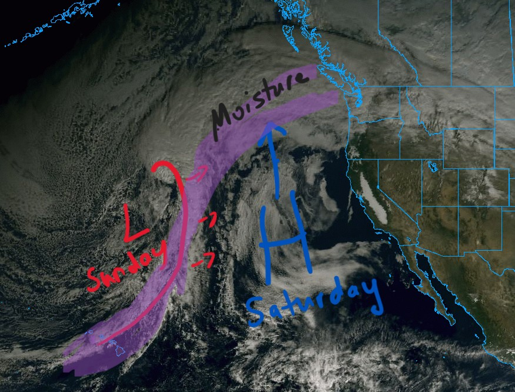
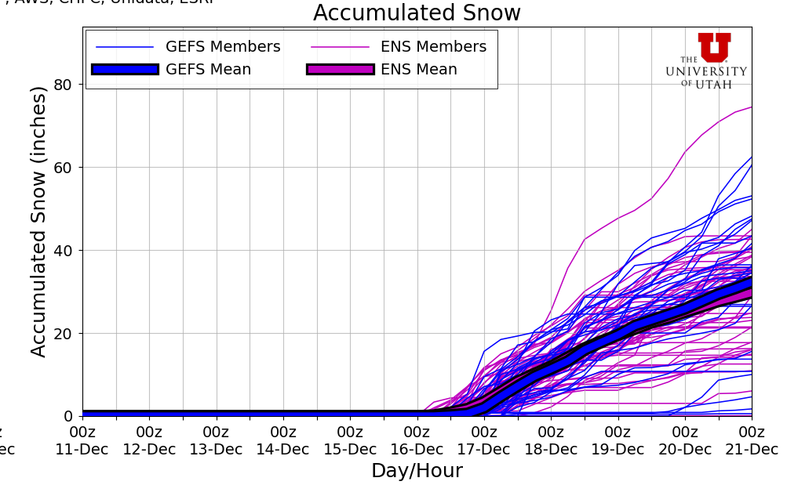

🚄No Rest for the Weary: Atmospheric River Storm Train Has Decimated the Snowpack. When Can We Hope to Get Off 😟?
Welcome to The Dendritic Growth Zone!
🔮 Forecast Discussion
Observation Highlight from the Past Week - 23.2 inches
Before we begin, I want to quickly acknowledge the mind-boggling nature of this last week's weather. 23.2 inches was the total precipitation recorded since Friday, December 5 at the Rex River Snotel site at 3800 ft elevation. This site is located southwest of the Cedar River and about 8 miles southwest of Snoqualmie Pass. This is an incredible amount of precipitation for a single week, especially in December. This was the highest weekly total measured in the state, but it was not alone. There were three other sites that recorded more than 20 inches of precipitation! However, I am certain other locations received substantially more than this. Sadly, we don't have precipitation gauges everywhere😢.
Short-term (Friday-Monday)
Oh boy, what a week it has been. Precipitation was relenteless, snow levels skyrocketed, rivers flooded to record levels (and are still rising), and our feeble mountain snowpack was absolutely decimated. The culprit? As I'm sure many of you are aware, a relentless train of atmospheric river (AR) events drenched the region for days on end. While these extreme conditions will taper off, we unfortunately aren't immediately moving into a more favorable pattern. As we approach the weekend, the current AR will weaken and be forced northward towards British Columbia by a transient ridge of high pressure. Precipitation for much of the Cascasdes will taper off through Saturday, but rain and (very) high elevation snow could still be falling in the North Cascades. This transition will bring continued mild conditions and high freezing levels. However, Saturday's weather will be a little more pleasant with more stable air bringing less wind and the possibily of seeing that weird light bulb in the sky. Finally, the firehose of sub-tropical moisture will start to shut off, but not for long.

Freezing Levels will have a strong north-south gradient through Friday. Up north they look like they'll stay in the 4000-6000 ft range, while down south they will be higher, around 6500-8000 ft. As the ridge of high pressure builds in Saturday, freezing levels will increase throughout the region to somewhere between 6000-7500 ft.
On Sunday, a shortwave trough with a coincident cold front moves through midday Sunday as it works its way around a larger longwave trough of low pressure spinning in the Gulf of Alaska. This is a very similar set up to last Sunday. This system will bring a slight drop in freezing levels, but they will likely still remain well above 5000 ft. It will also refresh the tap of subtropical moisture, which returns with a moderate vengeance as a forecasted moderate to strong (3 to 4 out of 5) AR moves through into Tuesday, bringing along another 2-5 inches of water to the mountains. Thus, we aren't quite done with this AR sufferfest just yet.
Medium-Term (Tuesday-Thursday)
After this next AR winds down, we can finally look ahead to some potentially good news. Our mountain snowpack has been beaten down and left for dead. It is Tiny Tim, while these ARs are pre-ghost Scrooge. But there is hope that it will rise up like the mythical phoenix from the ashes (or dirt in this case?). Cold air from the Gulf of Alaska is expected to finally make its way into the Pacific Northwest by midweek next week as the longwave trough in the Gulf digs further south. At the same time a ridge of high pressure builds in the far western Pacific. This pattern is particularly helpful for bringing us cold air. While there is still ample uncertainty, there is solid model agreement that this outlook with bring along cooler air, lower freezing levels, and snow totals on the order of feet. Yes I said FEET!! Could this be our savior from the current snow drought? Time will tell, but the signs are promising.
Reading the Tea Leaves🍵
As mentioned earlier, a cold and wet pattern may be starting up. We appear to be transitioning from a dominant West Coast Ridge pattern - which is generally warm and wet for us, and warm and dry for the rest of the western US - into a dominant Pacific Ridge pattern. This incoming pattern is characterized by a ridge of high pressure over the western Pacific that allows cold air and Gulf of Alaska storms to penetrate into the Pacific Northwest. And its projected to stick around for a while! Thus, a bunch of forecast models are indicating massive snow totals in the coming 7-10 days with decent model agreement. For instance, our lowly Snoqualmie Pass could see upwards of 3 feet of snow. But uncertainty is the name of the game right now, so stay tuned as we monitor this exciting development.

🚧👷Site Updates👷🚧!
This week brought some solid changes to the site. We built out our forecast evaluation page, so now you can track how well our forecasts
(and some other models) performed during the past week Check it out! It will be updated each throughout the season to see how performance
various from one place to another.
Evaluation.
Nevertheless, we still have more to do! We'll keep adding more forecasting tools along with some more forecast locations. If you have any suggestions
or feedback, please reach out to us via the contact form on the About page.
Thanks again for visiting!
❄️ Precipitation & Snowfall
Through 4am Saturday
- Mt. Baker: 0-1" (Heather Meadows)
- Washington Pass: 0-1"
- Stevens Pass: 0-1"
- Hurricane Ridge: 0"
- Blewett Pass: 0"
- Snoqualmie Pass: 0"
- Crystal: 0"
- Paradise: 0"
- White Pass: 0"
Through 4am Sunday
- Mt. Baker: 0-1" (Heather Meadows)
- Washington Pass: 0-2"
- Stevens Pass: 0-1"
- Hurricane Ridge: 0"
- Blewett Pass: 0"
- Snoqualmie Pass: 0"
- Crystal: 0"
- Paradise: 0"
- White Pass: 0"
Weekend Snow Accumulation (4pm Thursday through 4am Monday 1 Dec):
- Mt. Baker: 0-1" (Heather Meadows)
- Washington Pass: 0-2"
- Stevens Pass: 0-1"
- Hurricane Ridge: 0"
- Blewett Pass: 0"
- Snoqualmie Pass: 0"
- Crystal: 0"
- Paradise: 0"
- White Pass: 0"
Hopefully by this time next week, we'll be reporting some more substantial snow totals. For this weekend though, the forecast remains meager at best. Great time to wax and tune your skis and re-waterproof your gear if you already haven't!
🧊 Freezing Level
- Saturday: 6000-8000 feet
- Saturday Night: 5000-7000 feet
- Sunday: 5000-6000 feet
No rest for the weary. Freezing levels remain quite high through the weekend, so snow will be limited to the highest elevations only.
🎿 Our Recommendations
Best Choice This Weekend: Local trails
Sadly, with no easily accessible areas getting any significant snow this weekend and a pretty non-existent snowpack, we don't really recommend anywhere. However, if you want to get outside, consider exploring some local trails or lower elevation hikes that are still accessible. Maybe go out to a safe location to watch the swollen rivers flow (check local advisories beforehand).
However, if you are absolutely desparate for some turns, you need to get access to high terrain above at least 5000 feet. But be aware that this week's deluge and flooding likely severely damaged remote roads and trails, so take that into consideration before heading out and seek beta from locals. Conditions above 10,000 feet are probably looking pretty nice. If you own a helicopter, you might be in luck!
Runner-Up: Your couch
Cozy up with some tea and a blanket. Make some cookies. Watch ski movies. Repair or maintain your gear.